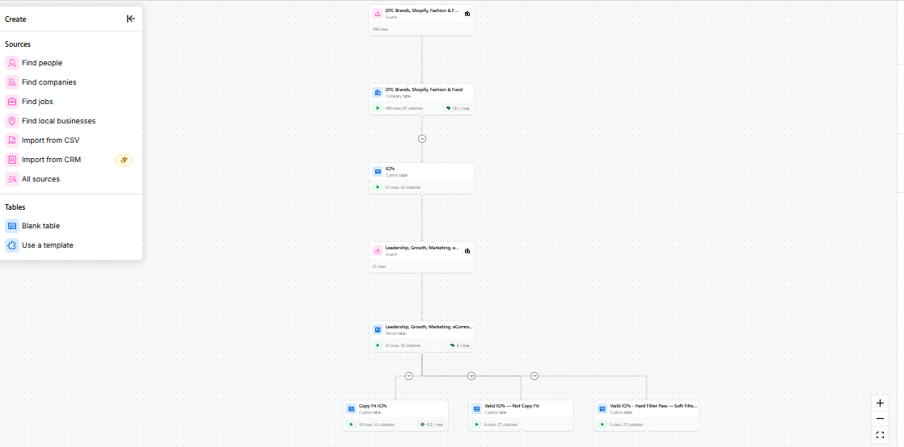
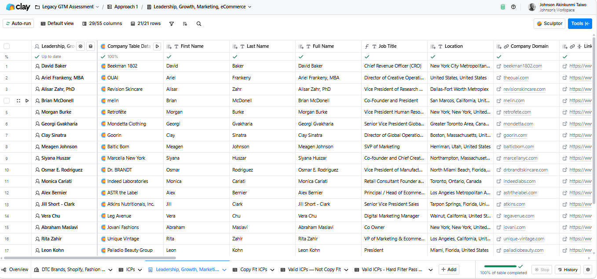
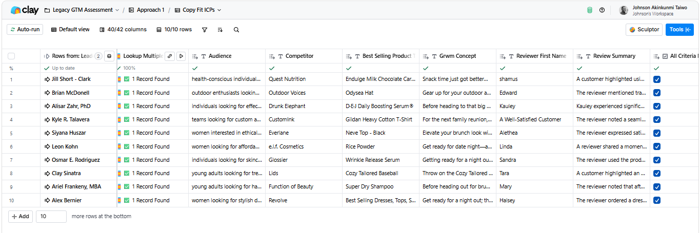

GTM System for CRO Agency
Built a full-stack GTM research and outreach system in Clay, from raw list to personalised, tiered, send-ready output.
Service costs $10k–$22k. The prospect has to already be spending far more than that on ads, otherwise the conversation is dead before it starts. The buying signal: high ad spend + no behaviour tools + no A/B testing = money being left on the table.
1. Commercial Logic
Service costs $10k–$22k. Prospect must already be spending far more than that on ads. The buying signal: high ad spend + no behaviour tools + no A/B testing = money being left on the table. Every column in the system earns its place against that signal, nothing decorative, nothing aspirational.
2. The Framework, FETC
Find → Enrich → Transform → Create & Export. Each stage gates the next. The output of one stage is the input filter for the next. No row reaches the email assembly layer that hasn't already cleared commercial qualification.
3. What Was Built
- Leads sourced directly in Clay and BuiltWith as the primary data source. Filtered by industry, location, and employee count 30 to 200, US and Canada.
- BuiltWith tech stack pulled per company → AI prompt categorized into 18 operational categories as structured JSON.
- Traffic enrichment (20k+ visitors only) → Meta and Google ad spend estimated per company.
- Friction scoring system (max 11 points) → Critical / High / Moderate / Low verdict + a one-sentence pain summary per row.
- ClayGent visiting each website → SKU count, best-seller URL, target audience, real competitor, GRWM ad concept, best customer review.
- Full email assembled per row → nested JSON → flattened to columns in Clay.
- Three-tier output: Table 1 (ready to send) / Table 2 (copy incomplete) / Table 3 (second wave).
- One ClayGent prompt engineered to return all 8 enrichment fields in a single run, tech stack categorization, ICP qualification, ad spend estimation, friction scoring, review mining, review refinement, GRWM concept, and copy assembly variables. Single prompt approach was deliberate: fewer credit calls, same output depth.
4. Copy Assembly
Copy variables were nested inside each other before being passed to the email assembly prompt. The reviewer quote fed into the audience line. The competitor fed into the ad strategy hook. The friction score determined the urgency level of the closer. Each email was assembled from live enriched data, not a template with blanks filled in.



Three tiered Google Sheets. Fully personalised email per row. Commercial priority, friction signal, and pain summary per company. Built to hand off, not explain.
- Clay, orchestrating 8 prompts, ClayGent web research, structured JSON across the row
- Commercial qualification logic, ad spend + tech stack + traffic, scored against the buying signal
- Copy assembly, every email anchored to a real review, a real competitor, a real ad concept
- Three-tier output discipline, sales gets clean batches, not a 500-row dump
I'd build your prospect intelligence the same way, every column earning its place against a buying signal, not a feature. Most GTM workflows are a tour of available enrichments dressed up as research. I'd flip that, start from the commercial logic of the deal, then build only the columns that move a row toward send-ready or out of the list. Your team would open Clay and see priorities, not data.